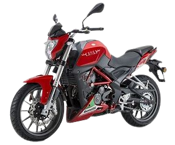
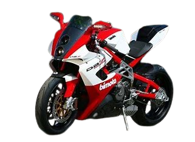
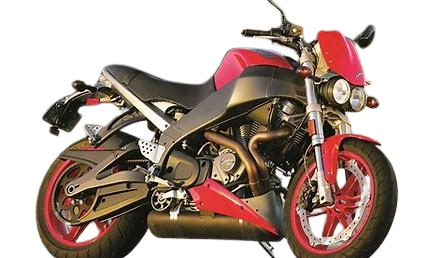
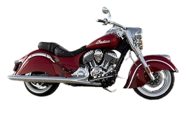

Moto
esse site dara algumas informações sobre motos raras
Aqui estão algus exemplos
Benelli Tornado Tre 900

A Benelli Tornado Tre 900 foi fabricada de 2002 a 2014 em Pesaro, Itália.
Projetada do zero, ela incorporou inovações técnicas e características revolucionárias.
O motor era um V3 de 898 cc, com 130 cv de potência máxima.
Seu design combinava elementos angulares e curvos, e o motor era parte integrante do chassi.
A posição de pilotagem era única, com o radiador sob o banco traseiro e ventoinhas amarelas visíveis.
Motor: Três cilindros em linha, 898 cc.
Potência Máxima: Aproximadamente 130 cv.
Peso: Cerca de 210 kg.
Altura do Assento: 810 mm.
Freios: Freio a disco duplo na dianteira e traseira.
Características Especiais: Design esportivo e exclusivo.
Bimota DB7

A Bimota DB7 foi projetada para ser a base de uma campanha no World Superbike.
O motor era um V-twin Ducati de 1098 cc, com 160 cv de potência.
O chassi de alumínio e a suspensão bem ajustada proporcionavam excelente manuseio.
A DB7 era uma máquina individual e muito prazerosa de pilotar.
Motor: V-twin Ducati, 1098 cc.
Potência Máxima: Cerca de 160 cv.
Peso: Aproximadamente 170 kg.
Altura do Assento: 800 mm.
Freios: Freio a disco duplo com pinças Brembo.
Características Especiais: Chassi de treliça e componentes de alta qualidade.
Buell XB12S Lightning

A Buell XB12S Lightning combinava um motor Harley-Davidson V-twin de 1202 cc com inovações técnicas.
O foco estava na centralização de massa e manuseio ágil.
O motor oferecia torque abundante, e a posição de pilotagem era única.
A qualidade de construção era exemplar, mas alguns problemas elétricos
Motor: V-twin Harley-Davidson, 1203 cc.
Potência Máxima: Aproximadamente 103 cv.
Peso: Cerca de 179 kg.
Altura do Assento: 775 mm.
Freios: Freio a disco na dianteira e traseira.
Características Especiais: Design inovador e suspensão dianteira Showa.
Indian Chief

A Indian Chief foi produzida de 1922 a 1953 e depois retomada em 1999.
Era conhecida como o “big twin” da Indian, mais potente que a ágil Scout.
O motor variou de 61 a 80 polegadas cúbicas (1.000 a 1.300 cc).
A Chief foi uma moto icônica, com design clássico e história rica.
Motor: V-twin, 1811 cc.
Potência Máxima: Varia, mas geralmente acima de 70 cv.
Peso: Dependendo do modelo, pode variar de 350 kg a 400 kg.
Altura do Assento: 660 mm a 680 mm.
Freios: Freio a tambor na traseira e disco na dianteira.
Características Especiais: Clássica, com detalhes cromados e estilo vintage.